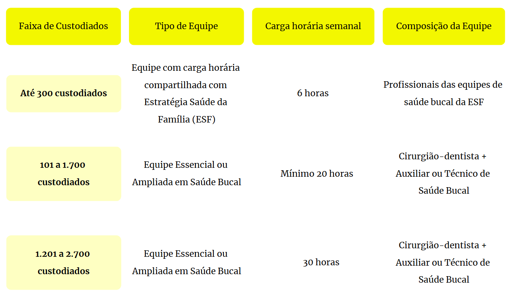
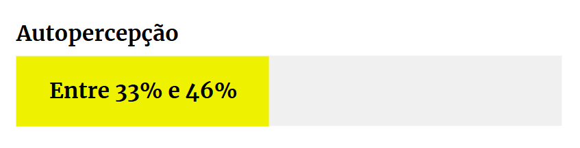
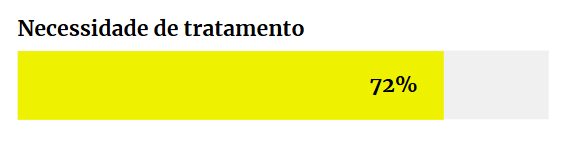
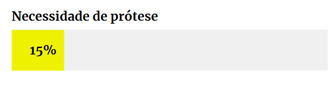
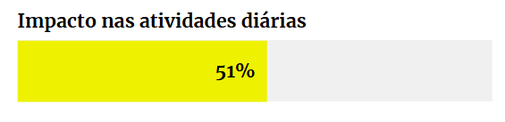
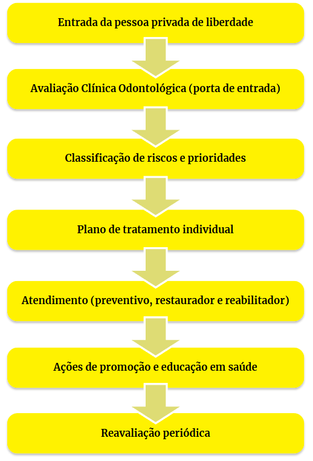
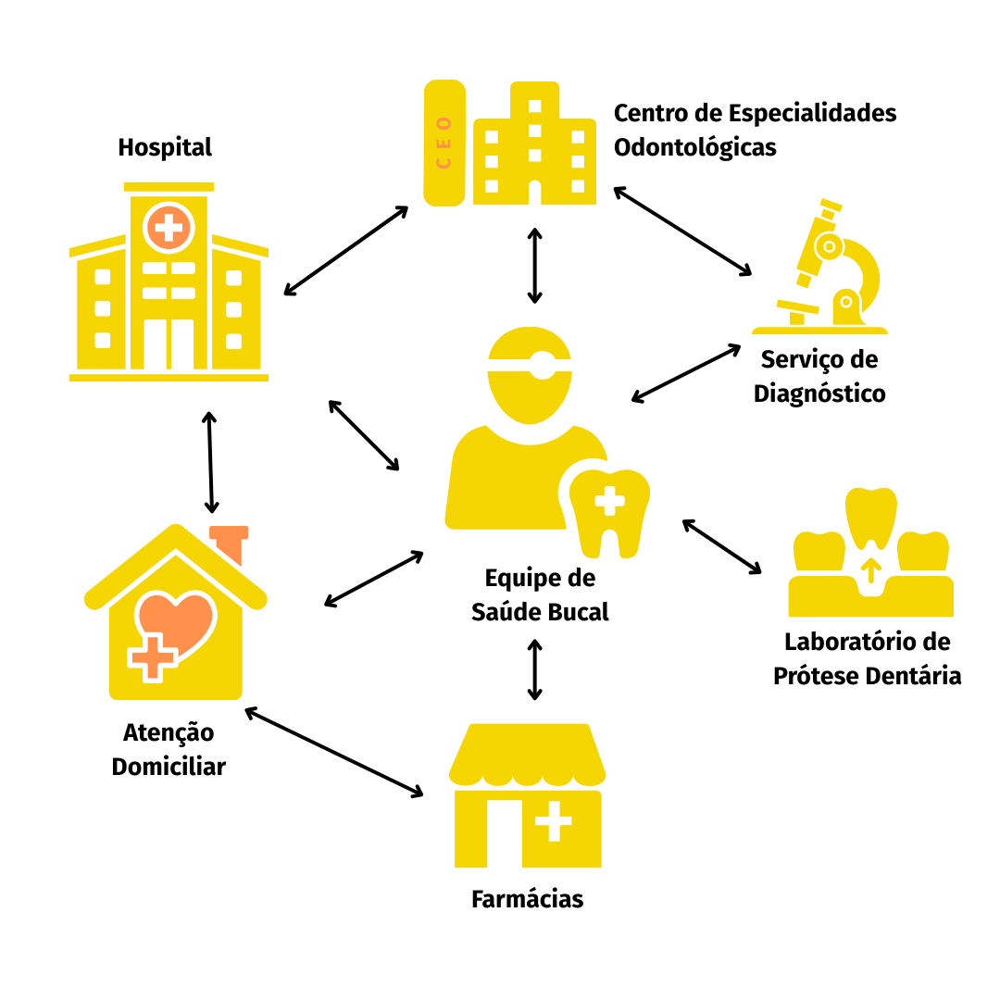

Apresentação da Unidade
Olá, estudante-trabalhador! Seja bem-vindo!
Nesta Unidade, você vai ampliar seus conhecimentos sobre o papel fundamental das equipes de Saúde Bucal (eSB) no sistema prisional, compreendendo sua constituição, atribuições e desafios no cuidado às pessoas privadas de liberdade (PPL). Além disso, você conhecerá a Rede de Atenção à Saúde Bucal (RASB) e entenderá como ela contribui para a recuperação, tratamento e promoção da saúde das pessoas privadas de liberdade (PPL). Essa é uma oportunidade de refletir sobre o tema e atuar de forma mais integrada para fortalecer a atenção à saúde bucal nas instituições penais.
Objetivos de Aprendizagem da Unidade
Compreender a composição e o funcionamento das equipes de saúde bucal no sistema prisional, analisando suas atribuições;
Conhecer as principais doenças e agravos em saúde bucal que afetam a população privada de liberdade, seus fatores de risco e efeitos na saúde das pessoas privadas de liberdade;
Identificar as atividades desenvolvidas pelas equipes de saúde bucal, relacionando-as aos objetivos de promoção, prevenção e recuperação da saúde bucal;
Reconhecer a Rede de Atenção à Saúde Bucal e a integração de seus fluxos no contexto prisional.
Carga Horária de Estudo: 6 horas
5.1 A inserção da saúde bucal na assistência à saúde no sistema prisional
Você já refletiu sobre como as políticas públicas de saúde no Brasil se articulam entre si?
A Política Nacional de Atenção Integral à Saúde das Pessoas Privadas de Liberdade no Sistema Prisional (PNAISP) é um exemplo claro dessa integração, especialmente com a Política Nacional de Saúde Bucal (PNSB) – Brasil Sorridente (Brasil, 2024), tema central desta Unidade.
Falar em qualidade de vida, dignidade e reintegração social exige considerar a saúde bucal como parte fundamental desses direitos, especialmente no contexto prisional. Antes da criação do Sistema Único de Saúde (SUS), a odontologia era basicamente curativa, focada em extrações, e acessível apenas a poucos. Com a criação do Plano Nacional de Saúde no Sistema Prisional (PNSSP) (Brasil, 2003), equipes multiprofissionais passaram a atuar nos presídios, mas a odontologia seguiu marginalizada, sem prioridade no SUS (Lucena; Pucca Júnior; Sousa, 2011).
Somente em 2004, com o lançamento do Brasil Sorridente, houve avanços importantes, como a criação das equipes de Saúde Bucal (eSB) na Atenção Primária à Saúde (APS), dos Centros de Especialidades Odontológicas (CEO) e dos Laboratórios Regionais de Prótese Dentária (LRPD), fortalecendo a presença da odontologia no SUS. Esse fortalecimento foi essencial para ampliar os serviços de saúde bucal nas instituições penais, mostrando a conexão direta entre a PNAISP e a PNSB.
A política vigente prevê avanços como as equipes de Atenção Primária Prisional (eAPP), que incluem o cirurgião-dentista na equipe mínima nos regimes fechado e semiaberto.
Segundo a Portaria GM/MS nº 2.298/2021, os municípios podem habilitar diferentes composições de equipes, conforme o número de custodiados e a carga horária necessária. Unidades com até 300 custodiados podem ter profissionais com carga horária compartilhada. Já aquelas com 100 a 2.700 custodiados contam com equipes essenciais ou ampliadas, com auxiliares/técnicos de saúde bucal atuando entre 20 e 30 horas semanais (Brasil, 2021) (Quadro 1).
Quadro 1 - Composição das equipes de Saúde Bucal no Sistema Prisional

Fonte: Brasil (2021).5.2 Dados referentes a doenças e agravos em saúde bucal e a seus efeitos na saúde da população privada de liberdade
Quando falamos em agravos em saúde bucal, podemos citar diversos fatores que provocam seu surgimento. Tais agravos geralmente levam o paciente a apresentar alguma condição que necessita de uma intervenção odontológica. Existe uma grande demanda por esses serviços no SUS.
Já parou para pensar por que essa demanda é tão elevada e por que é ainda maior entre a população privada de liberdade?
Estudos associam vulnerabilidade social a maiores índices e gravidade de doenças bucais. Muitas pessoas chegam ao sistema prisional sem nunca terem recebido atendimento odontológico (Kolling; Silva; Sá, 2013; Siqueira et al., 2019).
A superlotação das instituições penais representa um dos principais entraves para a atenção em saúde das PPL. Esse cenário gera um descompasso entre o número de PPL e a oferta de serviços, dificultando o acesso a atendimentos regulares. Além disso, fatores como má alimentação, sedentarismo, uso de drogas, tabagismo e a falta de higiene contribuem para agravar o quadro de vulnerabilidade em saúde nesse contexto (Siqueira et al., 2019).
O consumo de álcool e drogas, bastante presente no ambiente prisional, provoca sérias repercussões na saúde bucal, como cárie, xerostomia, candidíase, doença periodontal e até lesões cancerígenas (Al Bush, 2019; Rossow, 2021). Nesse sentido, uma comparação da realidade do sistema prisional com os achados da pesquisa SB Brasil 2023 (Brasil, 2025) é pertinente, pois ela traz dados nacionais relevantes sobre a saúde bucal: a autopercepção da população adulta (35-44 anos) sobre a sua saúde bucal, a necessidade de tratamento odontológico, a necessidade de próteses e os impactos nas atividades diárias. A aproximação entre os dados nacionais e a realidade do sistema prisional permite refletir sobre as desigualdades no acesso e a maior vulnerabilidade dessa população.
Dados da SB Brasil 2023 sobre a saúde bucal da população em geral:

Entre 33% e 46% avaliam sua saúde bucal como “boa”. PE, BA, AL, MS e DF apresentam os maiores índices de percepção “ruim” e “muito ruim”.

72% afirmam que precisam de atendimento, variando de 57% (SC) a 88% (RN). As principais razões são prevenção, restaurações e extrações.

15% percebem a necessidade de prótese, com destaque para o Norte (26%) e Nordeste (22%).

Mais da metade (51%) relata impactos na rotina, como maior dificuldade para comer, dormir, sorrir e conviver (Brasil, 2025).
Agora vamos relacionar esses dados aos da saúde bucal no sistema prisional:
Os dados da SB Brasil 2023 (Brasil, 2025) referentes à população adulta em geral possibilitam uma inferência sobre a situação da saúde bucal no sistema prisional, considerando as vulnerabilidades dessa população:
O índice CPO-D (dentes permanentes cariados, perdidos e obturados) é um dos principais indicadores da saúde bucal. Segundo a Organização Mundial da Saúde (OMS) (Petersen, 2003), seus valores refletem o grau de severidade dos agravos: muito baixo (0,0-1,1), baixo (1,2-2,6), moderado (2,7-4,4), alto (4,5-6,5) e muito alto (6,6 ou mais). A SB Brasil 2023 (Brasil, 2025) aponta uma média nacional de 10,70 (muito alto) de dentes com experiência de cárie: cerca de 5 restaurados, 3 perdidos e o restante ainda com lesão ativa. No AM, 56,20% dos dentes avaliados foram considerados perdidos. A taxa de cárie não tratada atinge 52,74% dos adultos, com o RN apresentando o maior índice (74,05%). Agravos decorrentes da cárie, como lesões pulpares e ulcerações, afetam 18,52%, sendo mais comuns no Nordeste (23,59%). As necessidades mais frequentes são de restaurações e extrações.
Estudo de Rocha et al. (2024) sobre mulheres privadas de liberdade revela uma situação crítica. Na Penitenciária Feminina de Patos-PB, o índice CPO-D foi de 15,3, considerado muito elevado, com 23,83% dos dentes cariados, 58,43% perdidos e apenas 17,74% obturados.
Reflexão
Você já parou para pensar em uma interna que não consegue se alimentar direito por causa de uma dor de dentes ou até mesmo pela falta deles? Isso não afetaria somente a saúde, mas também a integração social.
Quando voltamos os olhos para outros países, podemos observar, em estudos realizados com a população privada de liberdade, uma grande variação no índice de CPO-D. Foram encontrados valores elevados na Austrália (20,4), África do Sul (15,45) e Inglaterra (14,35), conforme apontado por Osborn, Butler e Barnard (2003), Naidoo, Yengopal e Cohen (2005) e Lunn et al. (2003).
Na avaliação periodontal (gengivas e tecidos de sustentação dos dentes), o cálculo dentário é a condição mais comum, afetando 54,13% dos adultos, seguido do sangramento gengival (41,53%). Apenas um terço dos pacientes avaliados tem todas as regiões saudáveis, segundo o Índice Periodontal Comunitário (IPC), e o cálculo é a pior condição em 33,85%.
Você conseguiu observar o cenário preocupante que essa população enfrenta? A SB Brasil 2023 (Brasil, 2025) nos traz um quadro preocupante da saúde bucal dos adultos brasileiros, com alta experiência de cárie, muita cárie não tratada e consequências clínicas significativas. A realidade da população em geral não é boa, tendo em vista que o CPO-D é 10,70 (muito alto). No entanto, na população privada de liberdade, esse índice é ainda maior devido a diversos fatores: superlotação, que gera um descompasso entre o número de PPL e a oferta de serviços, má alimentação, sedentarismo, uso de drogas, tabagismo e falta de higiene (Siqueira et al., 2019).
5.3 Ações de promoção, prevenção e recuperação em saúde bucal inseridas no ambiente prisional
A prevenção é fundamental para evitar agravos em saúde. A Lei de Execução Penal (LEP) (Brasil, 1984) garante à população privada de liberdade o direito à assistência preventiva, que abrange a saúde bucal. Já a PNAISP também prevê ações de promoção e controle de agravos comuns nessa população (Brasil, 2021).
Segundo Freitas et al. (2016), a PNAISP busca reduzir os problemas bucais entre PPL por meio da promoção da saúde, prevenção e reabilitação. Destacam-se ações educativas, prevenção do câncer de boca e identificação precoce de doenças com manifestações orais.
Para que essas ações sejam efetivas e o direito à assistência preventiva seja garantido, é essencial conhecer os principais problemas de saúde bucal em cada estabelecimento penal e alinhar as ações às reais necessidades locais.
Nas instituições penais, observa-se uma alta taxa de extrações dentárias, consequência de fatores como vulnerabilidade social, falta de acesso prévio a cuidados odontológicos e falta de higiene bucal. Santos, Martins e Marques (2023) analisaram atendimentos odontológicos em unidades prisionais entre 2018 e 2022 e identificaram que foram feitos 369,9 milhões de procedimentos, dos quais 66,4% foram extrações dentárias. Apenas 0,04% foram orientações sobre higiene bucal, consideradas um procedimento básico e de caráter preventivo.
Será que é possível promover mudanças no sistema prisional para que os procedimentos conservadores, como o aumento do número de orientações de higiene bucal, superem em quantidade os procedimentos mutiladores?
5.3.1 Porta de entrada odontológica
Uma das estratégias principais é a organização da porta de entrada odontológica (avaliação clínica de toda condição de saúde bucal da PPL) nas instituições penais, conforme o fluxograma na Figura 1.
A avaliação da condição bucal permite que a eAPP identifique as necessidades das PPL que estão iniciando o cumprimento da pena a fim de determinar qual é o agravo mais recorrente na sua instituição e priorizar os casos urgentes para o início do tratamento odontológico.
Nos casos em que a porta de entrada não esteja sendo realizada, pode-se organizar o levantamento epidemiológico, que se caracteriza por uma avaliação geral da condição das PPL. Essa ação pode ser realizada em esquema de mutirão organizando para uma avaliação individual dos principais agravos existentes.
Reflexão
Como a sua instituição penal organiza a porta de entrada odontológica? Para auxiliar na sua
reflexão, leia o
Procedimento Operacional Padrão realizado pela Secretaria Nacional de Políticas Penais
(SENAPPEN)
(Brasil, 2015), que
traz um exemplo de ficha operacional padrão para a execução da porta de entrada odontológica.
Acesse: Clique aqui
Figura 1 - Funcionamento ideal da Saúde Bucal no Sistema Prisional
Funcionamento da Saúde Bucal no Sistema Prisional

Fonte: elaboração dos autores (2025).5.3.2 Educação em saúde bucal: promoção da saúde no contexto prisional
A educação em saúde bucal é um dos pilares da promoção da saúde no sistema prisional. Ela é fundamental para o desenvolvimento da autonomia e do protagonismo das PPL em seu próprio cuidado. Para além da prevenção de doenças, essa prática deve considerar os determinantes sociais da saúde, valorizando os saberes populares, a escuta qualificada e a construção coletiva do conhecimento (Kusma; Moysés; Moysés, 2012).
Trata-se de uma abordagem que reconhece cada pessoa como protagonista do seu processo de transformação e promotor da saúde na coletividade. Dentre as ações de promoção da saúde bucal que podem ser desenvolvidas nas instituições penais, destacam-se:
Clique para interagir
Nos quais as PPL compartilham suas experiências, dúvidas e saberes sobre cuidados com a saúde bucal, alimentação e higiene;
Com o uso de materiais simples e acessíveis que abordem temas como o uso do fio dental, escovação correta, fatores de risco para câncer bucal, relação entre uso de drogas e doenças da cavidade oral, entre outros;
Com o envolvimento das PPL, dos trabalhadores da instituição e, quando possível, dos familiares, promovendo uma visão ampliada da saúde;
Como produção de cartazes, teatro, poesia ou música, que articulem comunicação e expressão para fortalecer o vínculo com a temática da saúde bucal;
Incentivando que as PPL com maior engajamento em saúde atuem como multiplicadoras das ações educativas.
Além disso, é importante que essas atividades estejam integradas ao processo de acolhimento (porta de entrada), ao planejamento das ações da eAPP e ao cotidiano da instituição penal.
As práticas educativas em saúde bucal, quando pautadas pela perspectiva da promoção da saúde, contribuem significativamente para:
- fortalecer tanto a autonomia das PPL no cuidado com a própria saúde quanto sua corresponsabilidade com esse cuidado;
- construir um ambiente mais saudável e solidário;
- reduzir as desigualdades em saúde;
- reconhecer a saúde como direito e da cidadania como prática concreta.
É importante que, nesse processo de educação, a linguagem seja clara, respeitosa e acessível, de forma que o indivíduo possa compreender o processo ou agravo do qual o profissional está falando, as formas de tratamento ou recuperação e as formas de prevenção. Além disso, é necessário reforçar que a promoção da saúde é uma das atribuições e competência dos profissionais que atuam na APS, uma vez de acordo com a Política Nacional de Atenção Básica (PNAB).
5.4 O fortalecimento da saúde bucal por meio da Rede de Atenção à Saúde Bucal
Agora que você conhece todo o panorama dos agravos em saúde bucal mais importantes na população privada de liberdade, é necessário conhecer também outros pontos de atenção à saúde bucal que podem fortalecer o atendimento odontológico na sua instituição penal.
Em dezembro de 2024, a Portaria GM/MS nº 6.213 instituiu a RASB no SUS, com o objetivo de integrar ações e serviços de saúde bucal em todos os níveis de atenção, formando uma rede articulada para atender às necessidades dos pacientes (Brasil, 2024).
A RASB (Figura 2) organiza os serviços com base nas realidades locais e nos perfis epidemiológicos, garantindo fluxos assistenciais eficientes e centrados na pessoa, além de promover a integração entre atenção primária e especializada, com uso de protocolos, teleodontologia, governança, educação em saúde, autocuidado, monitoramento contínuo, intersetorialidade e práticas seguras baseadas em evidências.
A estrutura organizacional da RASB se organiza desta forma:
- Atenção Primária a Saúde (onde estão inseridas as eAPP);
- Atenção Especializada Ambulatorial;
- Atenção Especializada Ambulatorial Hospitalar, Atenção Hospitalar e Urgência e Emergência (Brasil, 2024).
Figura 2 - Fluxograma da Rede de Atenção à Saúde Bucal (RASB), Brasil (WORD PÁG 12 )

Fonte: Brasil (2018).Nem todas as demandas em saúde bucal podem ser resolvidas ou diagnosticadas nas instituições penais, portanto outros pontos de atenção podem ser necessários para a prestação da assistência odontológica adequada.
5.4.1 Saúde bucal na média e alta complexidade
Em relação à atenção especializada, podemos contar com os CEO, cuja função é oferecer atendimento especializado nos seguintes segmentos obrigatórios:
- Endodontia (tratamento de canal);
- Periodontia (tratamento especializado para os tecidos de suporte dos dentes);
- Estomatologia (diagnóstico de lesões bucais);
- Cirurgia (tratamento cirúrgico especializado);
- Atendimento a portadores de necessidades especiais (se houver adesão).
Além disso, o CEO ou as eAPP oferecem o serviço de prótese dentária, se houver a pactuação do município com um LRPD. Esse serviço é essencial para fins de reabilitação, uma vez que o sistema prisional tem altos índices de extrações dentárias, como já mencionado no decorrer da Unidade, e essa estratégia é fundamental para uma mudança positiva na oferta de serviços reabilitadores nas instituições penais, uma vez que a falta de dentes afeta diretamente princípios tão importantes para a autoestima e ressocialização das PPL.
Já quando pensamos em urgências odontológicas que estão acima da capacidade de atendimento de uma eAPP, como em casos de grandes infecções dentárias, inchaço importante na face e dificuldades de deglutição, é preciso acionar os serviços de urgência, seja de uma Unidade de Pronto Atendimento (UPA), seja de uma unidade hospitalar, a depender da gravidade do quadro clínico, uma vez que todos esses sinais podem levar o paciente à morte. É importante que toda a equipe (não só a de saúde) possa estar sensível à presença desses sinais e otimize os encaminhamentos, para que não haja a piora do quadro clínico e o paciente possa ser estabilizado.
Além disso, a assistência odontológica em ambiente hospitalar abrange os traumas da face, tratamento oncológico de cabeça e pescoço e demais procedimentos de alta complexidade que necessitam de um ambiente equipado e de profissionais especializados para oferecer esse tipo de assistência.
Encerramento da Unidade
Concluímos esta Unidade explorando a inserção da saúde bucal na atenção à saúde no sistema prisional. Abordamos a PNSB (Brasil Sorridente), sua relação com a PNAISP e os desafios específicos dessa população.
Destacamos dados preocupantes sobre a autopercepção da saúde bucal, a grande demanda por tratamento e próteses e os efeitos nas atividades diárias, condições de saúde que são agravadas no ambiente prisional.
Discutimos a importância da porta de entrada odontológica, da educação em saúde e do fortalecimento da RASB como estratégias de promoção, prevenção e recuperação da saúde.
A saúde bucal é um direito humano e sua garantia nos estabelecimentos penais é dever do Estado. Com o conteúdo desta Unidade, você está mais preparado para atuar na promoção da saúde bucal e contribuir para a qualidade de vida e reintegração social das PPL.
Promover saúde bucal vai além de restaurar sorrisos; é restaurar vidas.
Seja agente dessa transformação!
Podcast
Após estudar esse módulo, você pode revisar o conteúdo escutando o nosso podcast. É um bate-papo informal com os principais pontos do conteúdo estudado.
Ver transcriçãoParabéns por concluir essa unidade! Clique no botão "retornar" no canto superior esquerdo para continuar os seus estudos.
Referências principais
BRASIL. Ministério da Saúde. Secretaria de Atenção Primária à Saúde. Departamento de Estratégias e Políticas de Saúde Comunitária. SB Brasil 2023: Pesquisa Nacional de Saúde Bucal: relatório final. Brasília: Ministério da Saúde, 2025. Disponível em: https://bvsms.saude.gov.br/bvs/publicacoes/sb_brasil_2023_relatorio_final_1edrev.pdf . Acesso em: 4 ago. 2025.
BRASIL. Portaria GM/MS nº 2.298, de 9 de setembro de 2021. Dispõe sobre as normas para a operacionalização da Política Nacional de Atenção Integral à Saúde das Pessoas Privadas de Liberdade no Sistema Prisional (PNAISP), no âmbito do Sistema Único de Saúde (SUS). Diário Oficial da União, Brasília, DF, 10 set. 2021. Disponível em: https://bvsms.saude.gov.br/bvs/saudelegis/gm/2021/prt2298_10_09_2021.html . Acesso em: 4 ago. 2025.
BRASIL. Lei nº 7.210, de 11 de julho de 1984. Lei de Execução Penal. Diário Oficial da União, Brasília, DF, 13 jul. 1984. Disponível em: http://www.planalto.gov.br/ccivil_03/leis/l7210.htm . Acesso em: 4 ago. 2025.
Referências
AL BUSH, M. M. An oral cavity profile in illicit-drug abusers? Journal of Indian Society of Periodontology, v. 23, n. 6, p. 517-524, 2019. Disponível em: https://pubmed.ncbi.nlm.nih.gov/31849396/ . Acesso em: 4 ago. 2025.
BRASIL. Ministério da Saúde. Portaria GM/MS nº 6.213, de 19 de dezembro de 2024. Altera a Portaria de Consolidação GM/MS nº 3, de 28 de setembro de 2017, para instituir a Rede de Atenção à Saúde Bucal - RASB na Política Nacional de Saúde Bucal – PNSB, no âmbito do Sistema Único de Saúde – SUS. Diário Oficial da União, Brasília, DF, 20 dez. 2024. Disponível em: https://www.in.gov.br/en/web/dou/-/portaria-gm/ms-n-6.213-de-19-de-dezembro-de-2024-603307951 . Acesso em: 4 ago. 2025.
BRASIL. Ministério da Saúde. Secretaria de Atenção à Saúde. Departamento de Atenção Básica. A saúde bucal no Sistema Único de Saúde. Brasília: Ministério da Saúde, 2018. Disponível em: http://bvsms.saude.gov.br/bvs/publicacoes/saude_bucal_sistema_unico_saude.pdf . Acesso em: 31 ago. 2025.
BRASIL. Ministério da Justiça e Segurança Pública. Departamento Penitenciário Nacional. Diretoria do Sistema Penitenciário Federal. Coordenação-Geral de Assistências Penitenciárias. Odontologia. 2015. Disponível em: https://www.gov.br/senappen/pt-br/assuntos/SPF/assistencias-ao-preso/arquivos/procedimento-operacional-odontologia.pdf . Acesso em: 4 ago. 2025.
BRASIL. Ministério da Saúde. Portaria Interministerial nº 1.777, de 9 de setembro de 2003. Aprova o Plano Nacional de Saúde no Sistema Penitenciário. Diário Oficial da União, Brasília, DF, 11 set. 2003. Disponível em: https://bvsms.saude.gov.br/bvs/saudelegis/gm/2003/pri1777_09_09_2003.html . Acesso em: 4 ago. 2025.
CAMACHO, K. N. R. Governo de MS implementa programa para fortalecer a Saúde Bucal no Sistema Prisional. ms.gov.br, 8 nov. 2024. Disponível em: https://www.saude.ms.gov.br/governo-de-ms-implementa-programa-para-fortalecer-a-saude-bucal-no-sistema-prisional/ . Acesso em: 4 ago. 2025.
FREITAS, R. S. et al. Política Nacional de Atenção Integral à Saúde das Pessoas Privadas de Liberdade no Sistema Prisional: uma análise do seu processo de formulação e implantação. Revista de Políticas Públicas, v. 20, n. 1, p. 171-184, 2016. Disponível em: https://periodicoseletronicos.ufma.br/index.php/rppublica/article/view/5043 . Acesso em: 4 ago. 2025.
KOLLING, G. J.; SILVA, M. B. B.; SÁ, M. C. D. N. P. Direito à saúde no sistema prisional. Tempus - Actas de Saúde Coletiva, v. 7, n. 1, p. 281-297, 2013. Disponível em: https://www.tempusactas.unb.br/index.php/tempus/article/view/1304 . Acesso em: 4 ago. 2025.
KUSMA, S. Z.; MOYSÉS, S. T.; MOYSÉS, S. J. Promoção da saúde: perspectivas avaliativas para a saúde bucal na atenção primária em saúde. Cadernos de Saúde Pública, v. 28, supl., p. S9-S19, 2012. Disponível em: https://www.scielo.br/j/csp/a/dRZhMgLvLxqsRqpGgzJPRss/?lang=pt . Acesso em: 4 ago. 2025.
LUCENA, E. H. G.; PUCCA JÚNIOR, G. A.; SOUSA, M. F. A Política Nacional de Saúde Bucal no Brasil no contexto do Sistema Único de Saúde. Tempus - Actas de Saúde Coletiva, v. 5, n. 3, p. 53-63, 2011. Disponível em: https://www.tempus.unb.br/index.php/tempus/article/view/1042 . Acesso em: 4 ago. 2025.
LUNN, H. et al. The oral health of a group of prison inmates, Birmingham, England. Dental Update, v. 30, n. 3, p. 135-138, 2003.
NAIDOO, S.; YENGOPAL, V.; COHEN, B. A baseline survey: oral health status of prisoners - Western Cape. SADJ: Journal of the South African Dental Association, v. 60, n. 1, p. 24-27, 2005.
OSBORN, M.; BUTLER, T.; BARNARD, P. D. Oral health status of prison inmates - New South Wales, Australia. Australian Dental Journal, v. 48, n. 1, p. 34-38, 2003.
PETERSEN, P. E. The World Oral Health Report 2003: continuous improvement of oral health in the 21st century - the approach of the WHO Global Oral Health Programme. Community Dentistry and Oral Epidemiology, v. 31, suppl. 1, p. 3-23, 2003.
ROCHA, M. L. V. et al. Condição de saúde oral em mulheres no sistema prisional brasileiro. Journal of Medical and Biosciences Research, v. 1, n. 3, p. 952-961, 2024. Disponível em: https://journalmbr.com.br/index.php/jmbr/article/view/169 . Acesso em: 4 ago. 2025.
ROSSOW, I. Illicit drug use and oral health. Addiction, v. 116, n. 11, p. 3235-3242, 2021.
SANTOS, H. C. S.; MARTINS, G. S.; MARQUES, R. V. D. A. Análise do perfil odontológico e resolubilidade em unidades prisionais: desafios e perspectivas na saúde bucal. Revista Contemporânea, v. 3, n. 11, p. 23262-23277, 2023. Disponível em: https://ojs.revistacontemporanea.com/ojs/index.php/home/article/view/2072 . Acesso em: 31 ago. 2025.
SIQUEIRA, M. R. et al. Saúde bucal da população carcerária: levantamento epidemiológico. Journal of Research in Dentistry, v. 7, n. 6, p. 91-106, 2019. Disponível em: https://portaldeperiodicos.animaeducacao.com.br/index.php/JRD/article/view/16427 . Acesso em: 4 ago. 2025.
Minicurrículo das Autores
Graduado em Odontologia pela Universidade Federal de Mato Grosso do Sul. Especialista em Saúde Pública. Ocupa o cargo de Gerente de Saúde Bucal na Atenção Primária à Saúde pela Secretaria de Estado de Saúde de Mato Grosso do Sul (SES/MS).
Graduada em Odontologia pela Universidade Federal de Mato Grosso do Sul. Especialista em Saúde da Família pela FIOCRUZ. Mestre em Saúde da Família pela UFMS. Ocupa o cargo de Coordenadora de Saúde Bucal do Estado pela Secretaria de Estado de Saúde de Mato Grosso do Sul (SES/MS).